Full-stack platforms, SaaS products and marketing sites — built end to end, from data model and API through to the interface people actually use.
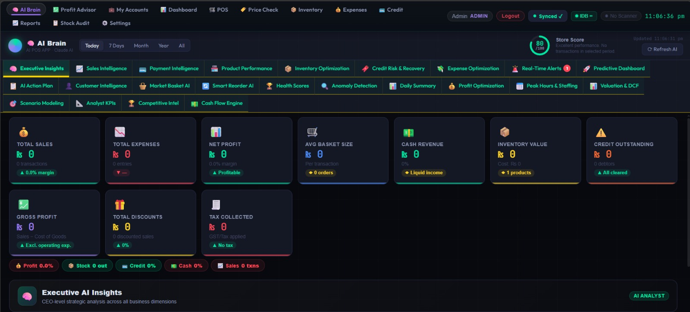
An intelligent retail management ecosystem combining secure RBAC with deep AI-driven business intelligence. Features an executive analytics command centre with 20+ AI insight modules, real-time financial metrics, and a dark-mode UI built for fast-paced retail environments.
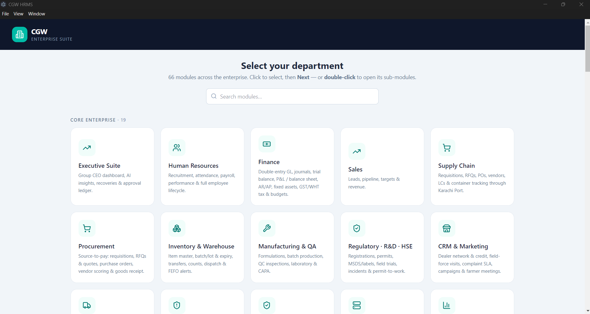
A desktop ERP and HRMS covering 66 modules across an entire enterprise - executive, HR, finance, sales, supply chain, procurement, manufacturing, regulatory and CRM - each department behind its own sign-in with its own dashboards, workflows and reporting.
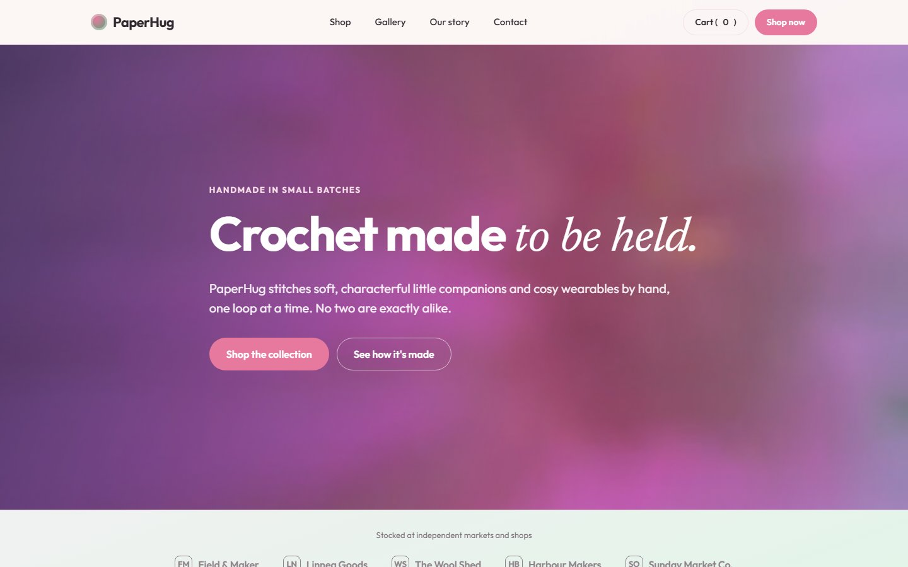
A soft, hand-crafted brand storefront for a small-batch handmade gift maker - browsable shop, product pages, a working cart with order summary, a gallery of finished pieces, and a story page that sells the maker behind the product.
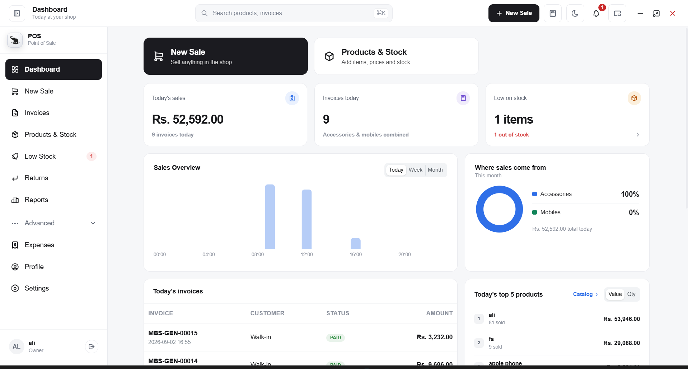
A desktop point-of-sale system for a phone and accessories retailer. Fast product search and live billing, invoice history with customer analytics, stock and low-stock tracking, expenses, returns, and sales reports exportable to Excel - all in one keyboard-driven shop counter app.
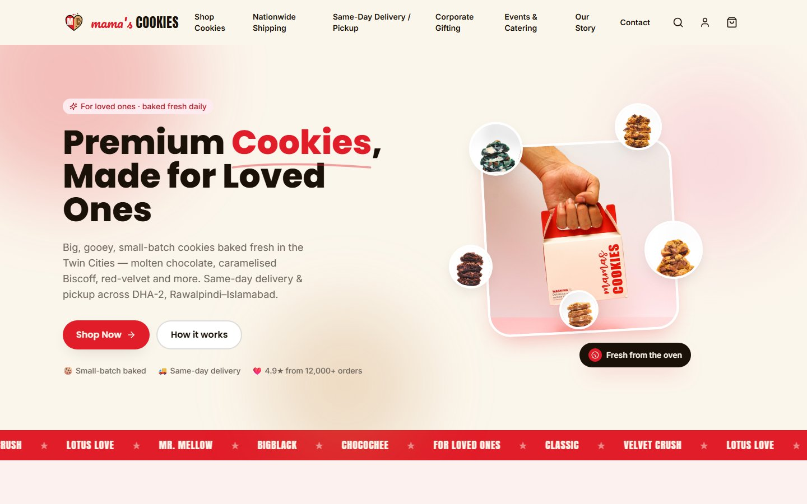
A full e-commerce storefront for a premium cookie brand delivering across Rawalpindi and Islamabad. Filterable product catalogue, live cart and checkout, same-day delivery and pickup scheduling, nationwide courier shipping, and corporate gifting - all on one fast, mobile-first storefront.
Offensive security engagements — network mapping, vulnerability management and automated reconnaissance, each delivered with a full findings and remediation report.
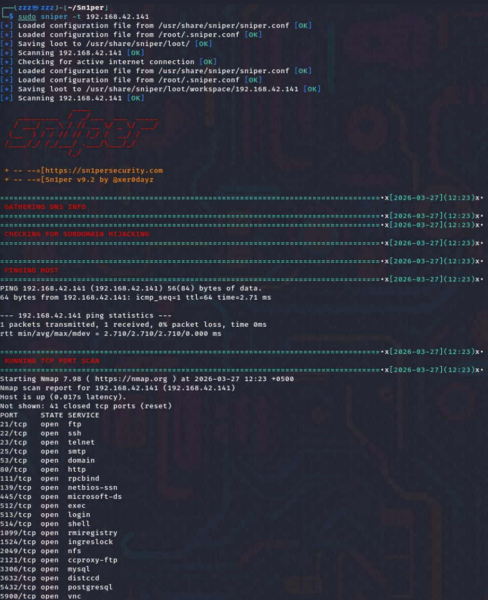
Full-range (0-65535) stealth SYN port scanning via Nmap 7.98 against a target host. Catalogued thousands of closed and filtered ports while revealing 20+ active services including legacy vulnerability vectors (FTP, SSH, Telnet) across a comprehensive 2,511-second automated cycle.
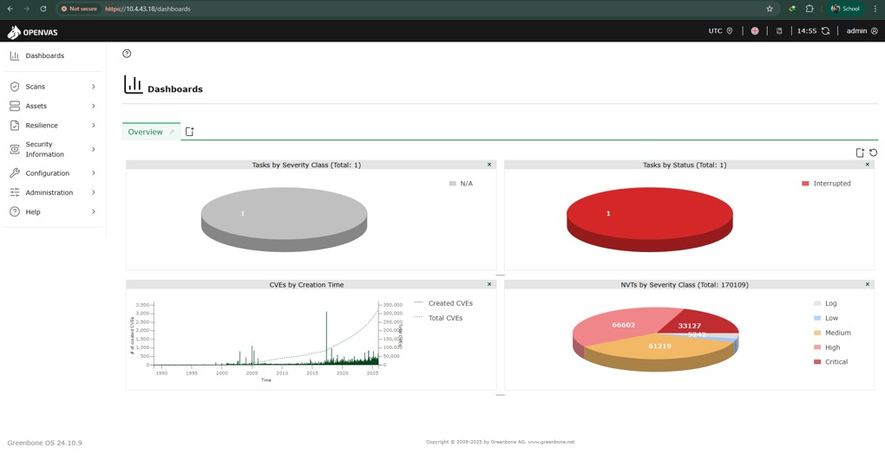
Centralized risk management deployment using Greenbone OS 24.10.9. Tracks an enterprise collection of 170,109 continuous vulnerability tests, organising discoveries into clear severity action streams - 33K+ Critical and 66K+ High threat classifications surfaced and triaged.
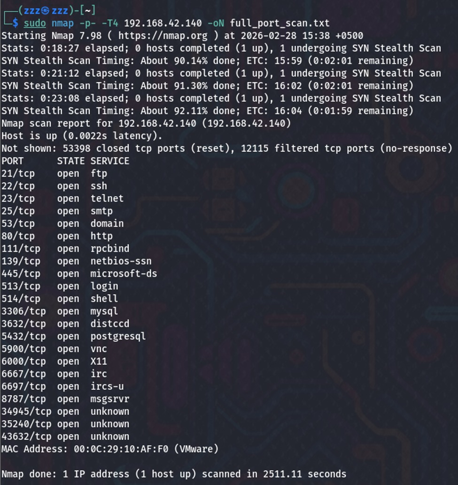
Automated reconnaissance pipeline via Sn1per v9.2 performing combined host pinging, DNS tracking and subdomain hijacking checks. Isolated multiple critical exposure vectors including open administrative remote shell entries across ports 512-514 on the target network.
Custom 2D games written from scratch — custom game loops, sprite animation and collision systems, with clean OOP source handed over on delivery.
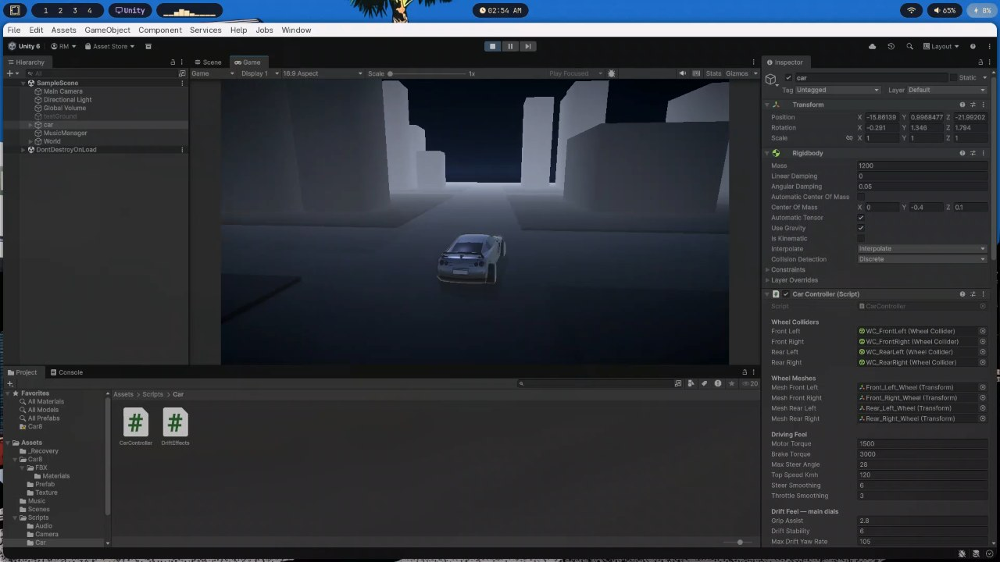
A 3D driving and drifting game built in Unity 6 with a hand-tuned car controller - wheel colliders, torque and brake curves, steer smoothing and a dedicated drift model with grip assist, drift stability and yaw-rate limits.
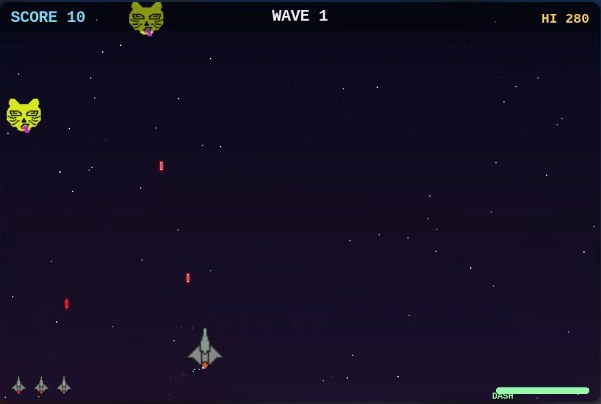
A wave-based arcade space shooter written in Python with Pygame - escalating enemy waves, scoring with a persistent high score, a limited-use dash, lives, and pixel-art enemies on a starfield.
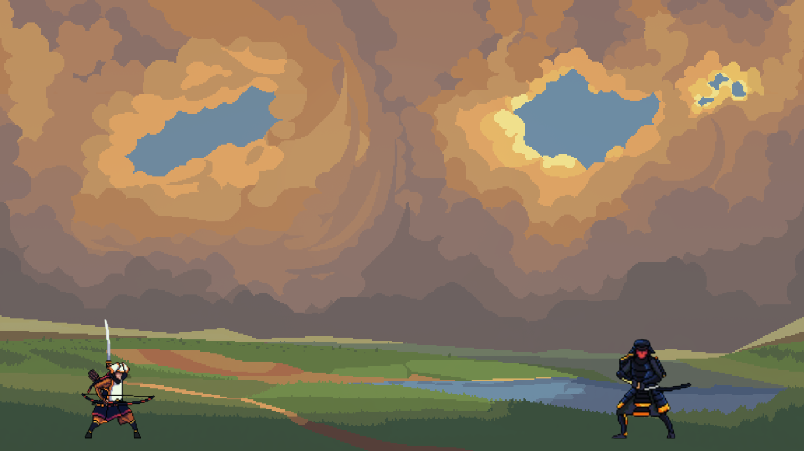
A 2D fighting game inspired by Street Fighter and Tekken, built with Java and Swing. Supports two human-controlled characters with attack animations, pixel-art samurai sprites, a hand-painted battlefield background, and a pause screen - all using a custom game loop.
Systems programming and developer tooling — console applications, editors and monitoring utilities where performance and memory behaviour are the whole point.
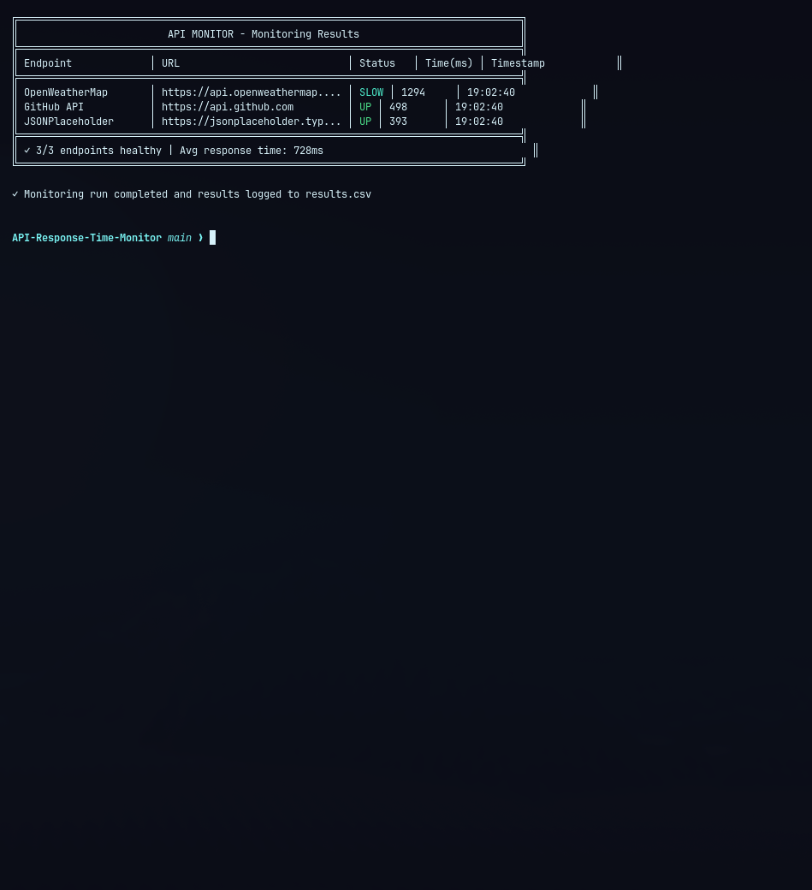
A robust .NET 8 console application for monitoring API endpoint health with parallel async execution. Tracks response times, status codes and uptime (UP/DOWN/SLOW), logs results to CSV, and integrates with GitHub Actions for fully automated scheduled monitoring runs.
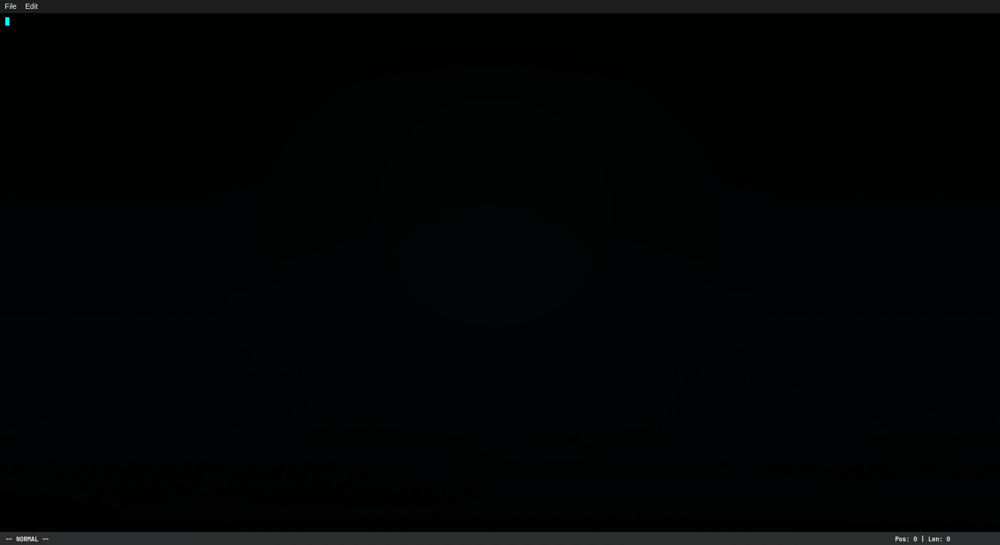
A lightning-fast, memory-efficient text editor built entirely from scratch without STL containers. Achieves O(1) insertion and deletion via a custom gap buffer, unlimited undo/redo through a manual linked-list stack, and a Vim-inspired modal editing interface.
We take three or four projects a year. If the timing and brief are right, we would love to hear from you.
Start a Project